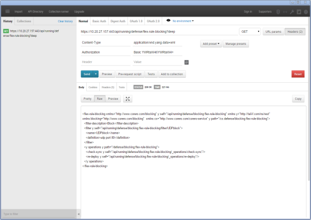
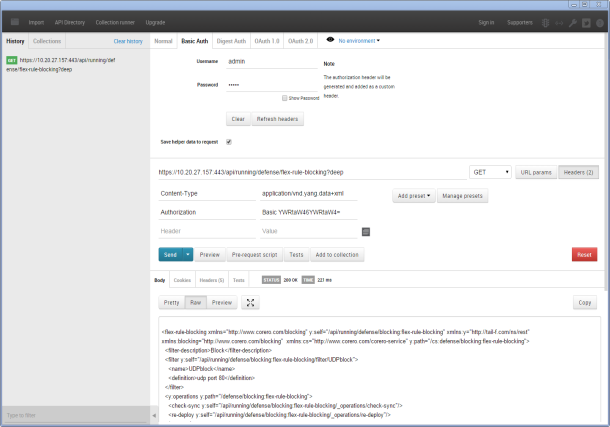

Show search and navigation tools
The Corero Management Server supports the use of a REST API over HTTP for performing configuration and monitoring tasks. You can use a variety of REST tools to exercise the API; the descriptions in this help set center around the UNIX/Linux command line tool, cURL, and the Postman REST client for the Google Chrome web browser.
The CMS REST server supports these HTTP methods:
You can use either XML or JSON format, both for data IN (PATCH or POST) and data OUT (GET).
These parameters are supported for use with GET requests to provide more specific control over which resources should be returned from the request.
Use "?" to separate the parameter from the resource path. For example, curl -k -v -u admin:admin https://[cmsipaddress]:443/api/running/defense/profiles/service-protocols/service-protocol-group?deep --header "Accept: application/vnd.yang.data+json"
The REST server supports the following HTTP return codes:
The media type of the resources exposed through the REST API is "application/vnd.yang.datastore".
Connections to the CMS web UI are made over SSL and port 443. When accessing the CMS via REST, you need either to specify a certificate that will verify your identity to the CMS, or to use the -k/--insecure option to execute the cURL command using a default certificate. For brevity, the examples shown throughout this help set use the -k/--insecure option.
Resources are exposed to the REST API through the CMS data model, and it is necessary to be familiar with the data model in order to exercise the API effectively and use it to execute commands for retrieving data or configuring appliances. Prior to assembling a script or application that will execute numerous or complex instructions via the REST API, it is helpful to become familiar with the data model and the API at a smaller scale, by executing individual requests using cURL or a browser client.
One way of learning the CMS data model is by using the CMS CLI. to execute commands. While the CMS web UI sometimes abstracts the data model in order to collect multiple related resources in a single screen, CLI commands always match the corresponding nodes in the data model in a one-to-one manner. Another helpful approach to learning the CMS data model is to prepare a configuration using the CMS (using either the web UI or the CLI), then using HTTP GET over the REST API to retrieve all or a portion of that configuration. This gives you a clear, reliable template that you can edit and use subsequently to modify the configuration via HTTP POST or PATCH.
The data model is structured in hierarchical levels such that it is easy to access multiple resources that reside at a single level, but it is difficult to work with resources across different levels.
The available resources reside under /api, as either "running" or "operational", and are accessible via XML or JSON. The media type of the resources is "application/vnd.yang.datastore".
The read-only "operational" resource represents the device's state data. Use this resource with the GET method to view the existing data model and configuration.
The "running" resource represents the running configuration datastore, and is present on all devices. Use this resource with the POST, PATCH, and DELETE methods to create or change things.
The UNIX/Linux command line tool, cURL, provides a simple means of composing and transmitting REST requests, though it lacks some of the amenities provided by browser-based REST clients (such as Postman) that can make it easier to compose requests.
The examples in this section use the Postman extension for Google Chrome, but any REST client plug-in for any major web browser probably will provide the functionality you need. You can download the Postman REST client from Google's Chrome Web Store.
An example Postman screen:

A Postman screen with the Basic Authentication header shown:

One good way of becoming familiar with the data model is to use a REST client to perform a GET of some or all of an existing CMS configuration.
This example shows the use of the GET method to obtain the default AAA configuration from the CMS:
The result will look approximately like this:
<aaa xmlns="http://tail-f.com/ns/aaa/1.1" xmlns:y="http://tail-f.com/ns/rest" xmlns:aaa="http://tail-f.com/ns/aaa/1.1">
<authentication>
<users>
<user>
<name>admin</name>
<uid>9251</uid>
<gid>9251</gid>
<password>$1$zjFs9SD/$qt7GOBe9y87zo5f3psJAu/</password>
<ssh_keydir>/var/corero/homes/admin/.ssh</ssh_keydir>
<homedir>/var/corero/homes/admin</homedir>
</user>
<user>
<name>support</name>
<uid>9250</uid>
<gid>9250</gid>
<password>$1$dH2fOcDQ$wBECONVrKEN25GlSxpVIX/</password>
<ssh_keydir>/var/corero/homes/support/.ssh</ssh_keydir>
<homedir>/var/corero/homes/support</homedir>
</user>
</users>
</authentication>
<external-authentication xmlns="http://www.corero.com/extauth">
</external-authentication>
</aaa>
Use the results of the GET request in the previous example as a template for changing the password of the admin user:
<aaa xmlns="http://tail-f.com/ns/aaa/1.1" xmlns:y="http://tail-f.com/ns/rest" xmlns:aaa="http://tail-f.com/ns/aaa/1.1">
<authentication>
<users>
<user>
<name>admin</name>
<uid>9251</uid>
<gid>9251</gid>
<password>adminpassword</password>
<ssh_keydir>/var/corero/homes/admin/.ssh</ssh_keydir>
<homedir>/var/corero/homes/admin</homedir>
</user>
</users>
</authentication>
</aaa>
This example uses the results of the GET request in the first example as a template for adding a new user named "supv":
<aaa xmlns="http://tail-f.com/ns/aaa/1.1" xmlns:y="http://tail-f.com/ns/rest" xmlns:aaa="http://tail-f.com/ns/aaa/1.1">
<authentication>
<users>
<user>
<name>supv</name>
<uid>875</uid>
<gid>80</gid>
<password>supvpassword</password>
<ssh_keydir>/var/corero/homes/supv/.ssh</ssh_keydir>
<homedir>/var/corero/homes/supv</homedir>
</user>
</users>
</authentication>
</aaa>
Some considerations to bear in mind when using a REST client such as Postman:
Some simple examples follow. These are intended to illustrate the execution of some different basic tasks using the REST API, and are not intended to demonstrate a comprehensive configuration.
The REST API examples provided in this help set's procedural topics use cURL for two reasons: 1.) it's a convenient way of including the REST command along with the corresponding web UI and CLI commands, and, 2.) the cURL syntax indicates each resource's position in the CMS data model more explicitly than the corresponding syntax entered into a REST client session. This, in turn, is part of why you may find it more comfortable and effective to use such a REST client, and Corero encourages you to do so, unless you are already familiar with cURL and prefer it.
In general, when using the REST API:
There are several things to note in these examples, specifically:
This example shows how all resources at a single level are obtained at once; note that this request does not obtain subresources:
curl -k -v -u admin:admin -X GET https://[cmsipaddress]:443/api/running/defense --header "Accept: application/vnd.yang.data+json"
This example shows how all resources and their corresponding subresources are obtained at once. Note how the "?deep" parameter is appended to the GET request to cause it to be recursive:
curl -k -v -u admin:admin -X GET https://[cmsipaddress]:443/api/running/site?deep --header "Accept: application/vnd.yang.data+json"
This example shows the use of the GET method to display a list of devices connected to the CMS.
curl -k -v -u admin:smartwall -X GET https://cmsipaddress:443/api/operational/site/topology-settings/device-list --header "Accept: application/vnd.yang.data+json"
This example shows the PATCH method used to change the configuration of an existing rule. (It shows rule CNS-000006 being disabled.)
curl -k -v -u admin:admin -X PATCH https://cmsipaddress]:443/api/running/defense/profiles/rule-groups/packet-rules/rule/ -d '{"rule": {"rule-name": "cns-000006", "admin-state": "disabled"} }' --header "Content-Type:application/vnd.yang.data+json"
This example shows how to define a new filter using Flex Rule. Note the use of the PATCH method, rather than POST.
curl -k -v -u admin:admin -X PATCH https://[cmsipaddress]:443/api/running/defense/flex-rule-blocking/filter/ -d '{"filter": {"name": "TCPblock", "definition": "tcp port 80", "admin-state": "disabled"} }' --header "Content-Type:application/vnd.yang.data+json"
This example shows how to delete an existing Flex Rule:
curl -k -v -u admin:admin -X DELETE https://[cmsipaddress]:443/api/running/defense/flex-rule-blocking/filter/TCPblock/ --header "Content-Type:application/vnd.yang.data+json"
This example demonstrates Smart Rule configuration, using the PATCH method:
curl -k -v -u admin:admin -X PATCH https://[cmsipaddress]:443/api/running/defense/early-access-capabilities/smart-rule-parameters/ -d '{"smart-rule-parameters": {"udp-server-bit-rate-limit": "5G", "udp-server-bit-threshold": "8G"} }' --header "Content-Type:application/vnd.yang.data+json"
This example shows the use of the GET method and the operational resource to display defense statistics:
curl -k -v -u admin:admin -X GET https://[cmsipaddress]:443/api/operational/defense/statistics?deep --header "Accept: application/vnd.yang.data+json"
This example shows the use of the GET method and the operational resource to display a single specific statistic, that for in-use suspicious addresses:
curl -k -v -u admin:admin -X GET https://[cmsipaddress]:443/api/operational/defense/statistics/ip-address-statistics/in-use-suspicious-addresses --header "Accept: application/vnd.yang.data+json"